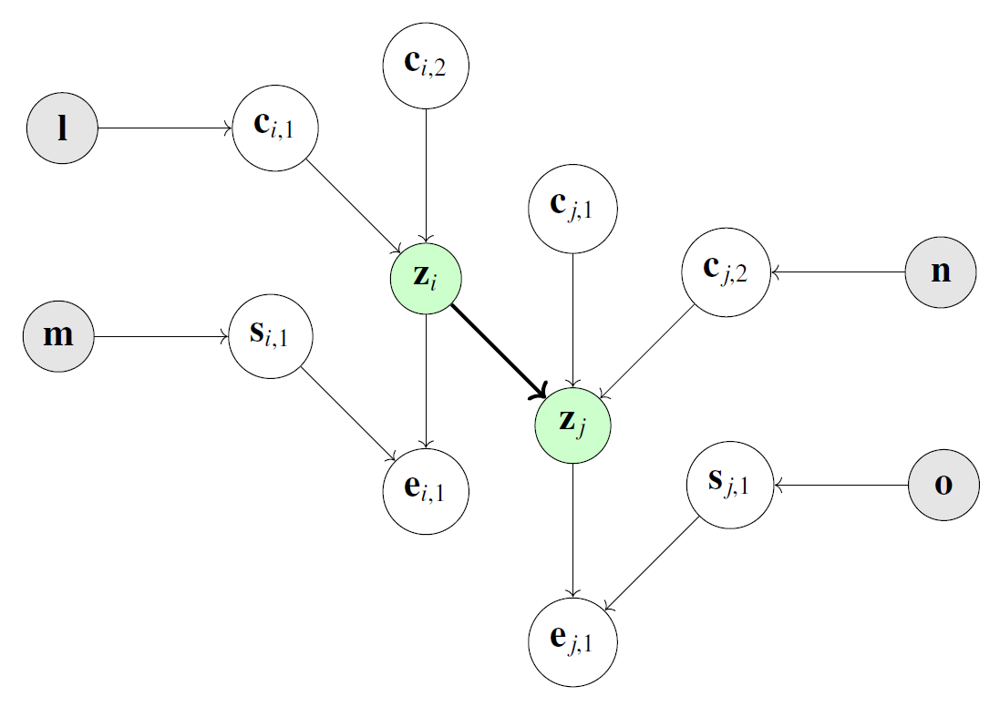
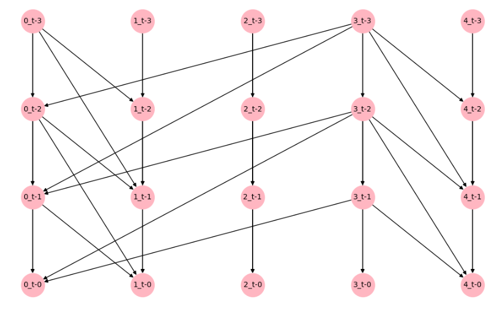

Background: Causal Discovery and The Information Theoretic Approach#
1. Introduction to Causal Discovery#
The pursuit of understanding causal relationships within time series data is a cornerstone of scientific inquiry. Whether in climate science, economics, or systems biology, distinguishing between simple correlation and true causation is critical.
Traditionally, this field has been dominated by methods like Granger causality, which relies on linear assumptions and temporal precedence. While effective in simple scenarios, these methods often falter in the presence of non-linear dynamics or complex multivariate interactions, mistaking correlation for causation.
This project introduces a new paradigm: shifting from statistical independence testing to pattern recognition. We explore TD2C (Temporal Dependency to Causality), a framework that hypothesizes that a causal link creates a persistent and learnable asymmetry in the flow of information through a system’s temporal graph.
2. State of the Art: A Brief Overview#
Current methodologies for causal discovery in time series can be broadly categorized into four families:
Granger-based Methods: Based on the concept that a variable \(X\) causes \(Y\) if past values of \(X\) help predict \(Y\) beyond what past values of \(Y\) alone can do. Standard implementations use Vector Autoregression (VAR).
Constraint-Based Methods: These rely on conditional independence tests (e.g., PC algorithm). For time series, PCMCI is the gold standard, iteratively removing irrelevant parents using tests like Partial Correlation or Gaussian Process Distance Correlation.
Noise-Based Approaches: Methods like VarLiNGAM exploit non-Gaussian noise distributions to identify causal direction, solving the identifiability problem in linear structural equation models.
Score-Based Strategies: These frame discovery as an optimization problem, minimizing a score (like BIC or a continuous DAG constraint) over possible graphs. DYNOTEARS is a prominent example.
3. The Dependency-to-Causality (D2C) Framework#
Our approach builds upon the static Dependency to Causality (D2C) framework. The fundamental insight of D2C is that causal relationships exhibit asymmetric patterns in their information-theoretic properties when conditioning on variables from their Markov Blankets.
3.1 Mutual Information#
To quantify statistical dependency without assuming linearity, we utilize Mutual Information (MI). For two random variables \(\mathbf{z}_i\) and \(\mathbf{z}_j\), MI is defined as:
Its conditional counterpart, conditioned on \(\mathbf{z}_k\), is:
Crucially, \(I(\mathbf{z}_i ; \mathbf{z}_j) = 0\) if and only if the variables are statistically independent (\(\mathbf{z}_i \perp \!\!\! \perp \mathbf{z}_j\)).
3.2 Causal Graphical Models and The Markov Blanket#
We represent multivariate distributions using Directed Acyclic Graphs (DAGs). A core concept in these graphs is the Markov Blanket (MB).
The Markov Blanket \(\mathbf{M}_i\) of a variable \(\mathbf{z}_i\) is the smallest subset of variables that renders \(\mathbf{z}_i\) independent of the rest of the network. It consists of:
Parents: Direct causes (\(\mathbf{C}_i\)).
Children: Direct effects (\(\mathbf{E}_i\)).
Spouses: Variables (\(\mathbf{S}_i\)) that share a common child with \(\mathbf{z}_i\).
 Figure 1: Illustration of a Markov Blanket within a DAG. The target variable \(\mathbf{z}_i\) (green) is shielded by its parents, children, and spouses (white nodes).
To visualize how these structures manifest in a full system, the figure below shows a ground-truth DAG for a synthetic multivariate time series (\(N=5\)). The arrows indicate causal links (e.g., from time \(t\) to \(t+1\)). Our goal is to recover this structure purely from observational data.
 Figure 2: A concrete example of a Directed Acyclic Graph (DAG) for a 5-variable system, showing the complex web of parents and children that TD2C aims to reconstruct.
3.3 Inferring Directionality via Asymmetry#
In a causal structure, information flows asymmetrically. For example, in a collider structure (\(X \to Z \leftarrow Y\)), conditioning on \(Z\) creates a dependency between \(X\) and \(Y\). In a chain (\(X \to Z \to Y\)), conditioning on \(Z\) breaks the dependency.
We can define asymmetric descriptors based on these properties. For a potential link \(\mathbf{z}_i \to \mathbf{z}_j\), ideal descriptors might look like:
The original D2C framework proposed a supervised learning approach:
Compute a population of conditional MI terms involving the Markov Blanket members.
Do not attempt to pre-classify members as parents or children (which creates a circular problem).
Instead, rely on the statistical distribution (quantiles) of these MI terms.
If \(\mathbf{z}_i \to \mathbf{z}_j\), the distribution of descriptors for \((i,j)\) will be systematically different from \((j,i)\). The machine learning model learns to recognize this “signature” of causality.